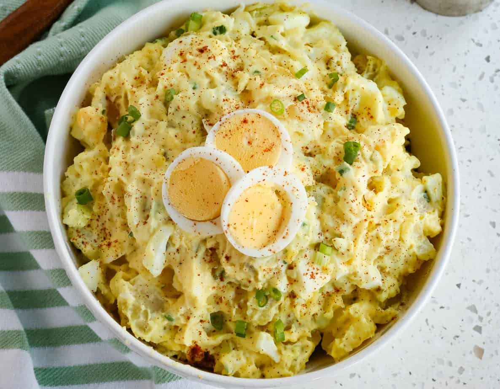

Odin Recipes
Perfect Potato salad.

Southern-Potato-Salad
A picnic, barbecue, or potluck menu is just not complete without a big, crowd-pleasing
bowl of homemade potato salad. These top tips will help you make the best potato salad
every time.
The Ingredients!
-
Tomatoes, cucumbers, apples, sweet bell peppers of any color, pickles, capers,
chiles, peas, celery, green beans, red onions, green onions, shallots, olives,
fennel, pimentos, watercress, and artichoke hearts
-
Crumbled cheeses including Gorgonzola, blue cheese, smoked Cheddar, or feta
-
Raw or toasted nuts and seeds, especially sunflower seeds, almonds, walnuts,
sesame seeds, or pecans
-
Tidbits of cooked or cured meats like salami, ham, prosciutto, smoked salmon,
shrimp, chicken, or bacon
-
And, of course, hard-cooked eggs